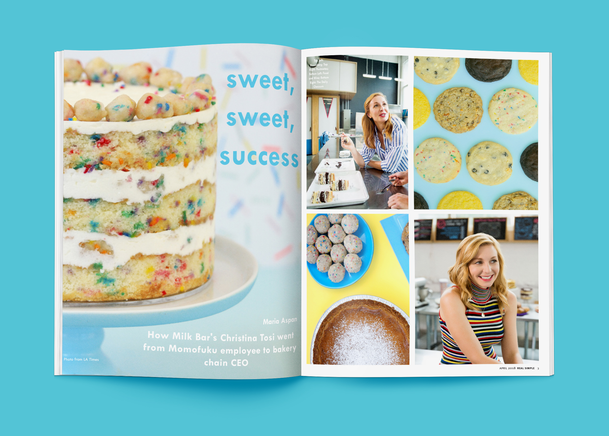
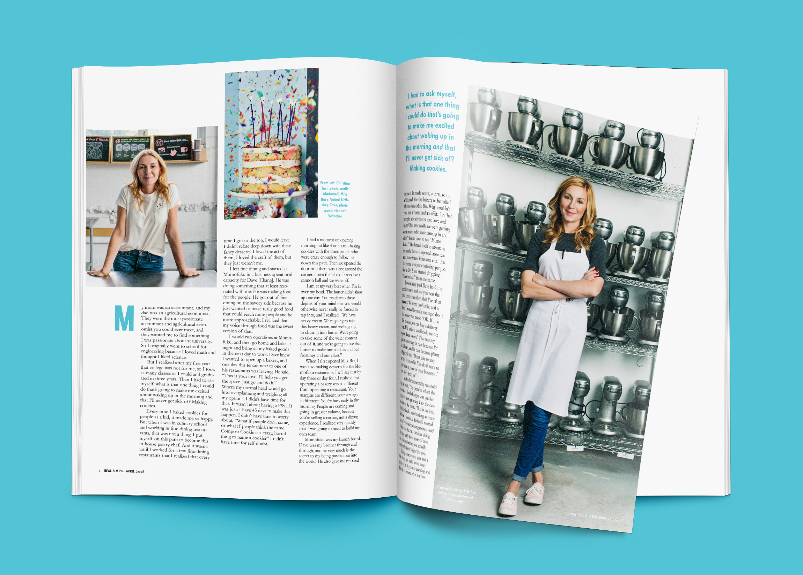

Magazine Spread

Visual Communication Design 1
For this assignment, we I created a magazine spread for Real Simple Magazine using an existing article and interview with Christina Tosi of Momofuku Milk Bar. I wanted to make sure I portrayed Real Simple apporpriatley while still bringin a youthful side to the spread, after all Tosi is a baker.
